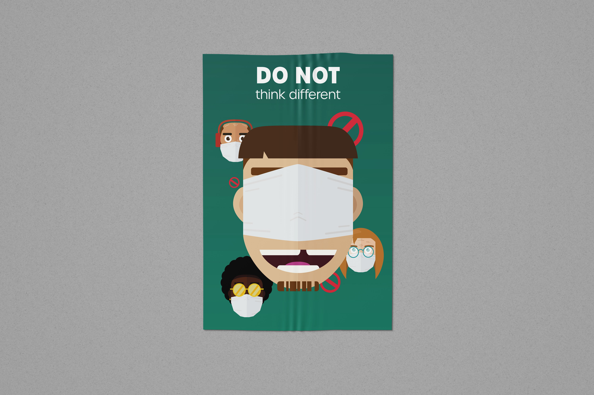

Voici un projet de création d'affiche A3 pour faire la promotion du port du masque, le tout avec comme contrainte d'être fait de façon vectorielle, minimaliste et moderne.
J’ai revisité le slogan d’Apple « think different » en disant « DO NOT think different », en mettant en scène trois personnages secondaires portant le masque correctement ainsi que le personnage principal ne le portant pas correctement et ayant un air idiot, en voulant penser autrement que les autres. Ceci appuie alors l’idée du slogan illustrant le fait qu’il ne faut pas essayer de penser différemment que les autres sous risque de ne pas bien se protéger et d’être vu comme un idiot. Des icônes d’interdiction renforce l’idée qu’il ne fait pas le bon choix. Graphiquement, je me suis inspiré du flat design pour créer mes personnages, cela rajoute un côté ludique voir cartoon, qui permet d’alléger le côté polémique/provoquant de l’idée diffusée. Cela permet aussi de viser tout type de personnes, enfant comme adulte. Il m’a paru important qu’il y ait une équité du genre et de la couleur de peau, pour renforcer la balance. Je me suis également inspiré de l’affiche Apple « think different » où apparait un visage (celui de Steve Jobs en l’occurence) d’une grande taille. L'affiche a, en effet, une connotation assez provocatrice, mais cela permet d'attirer l'oeil, d'en faire un "buzz" autour d'elle.